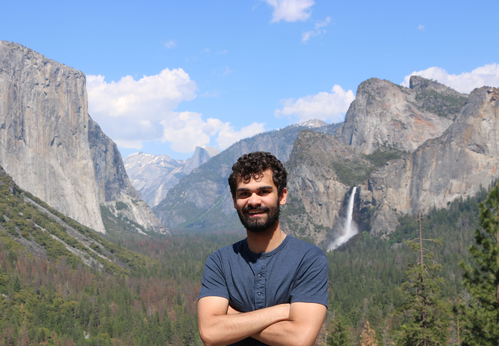

Austin Murdock, PhD
Company Builder
Cyber & AI/ML SME
Contact me on LinkedIn
Companies
Principal Investigator Research
PhD Research
Awards & Recognition
- UMBC Rising Star Award (2024)
- SageTap Founder of the Month (2024)
- DCA Live Red Hot Startup / Cyber (2022, 2023)
- DCA Live Red Hot Entrepreneur (2023)
- Black Unicorn Award (2023, 2024)
- U.S. Army xTechSearch 6 Award (2022)
- Global Cyber Innovation Summit "Disrupt 8" Award (2022)